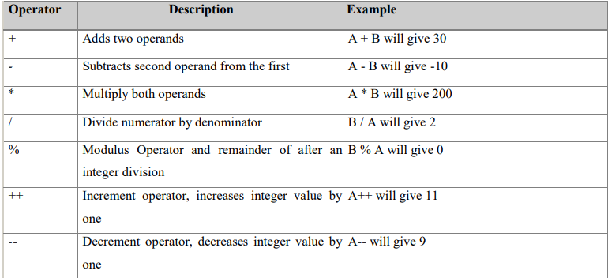
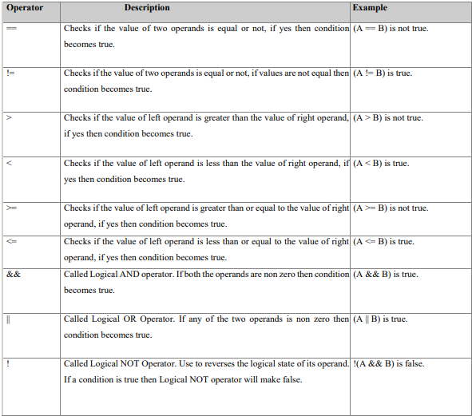
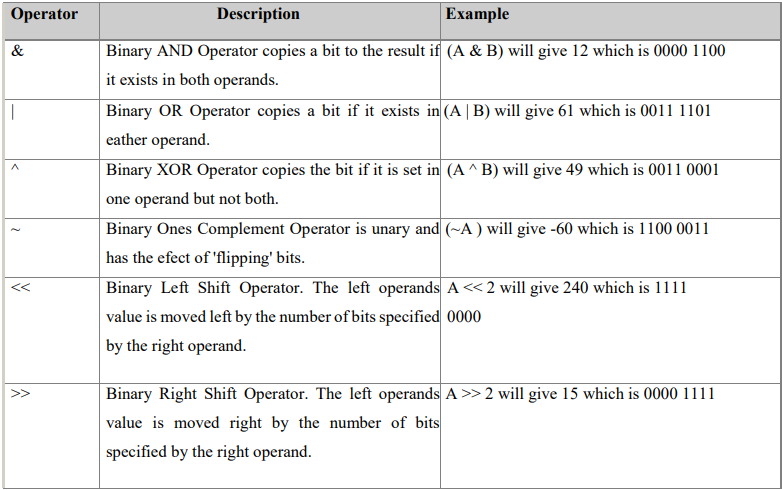
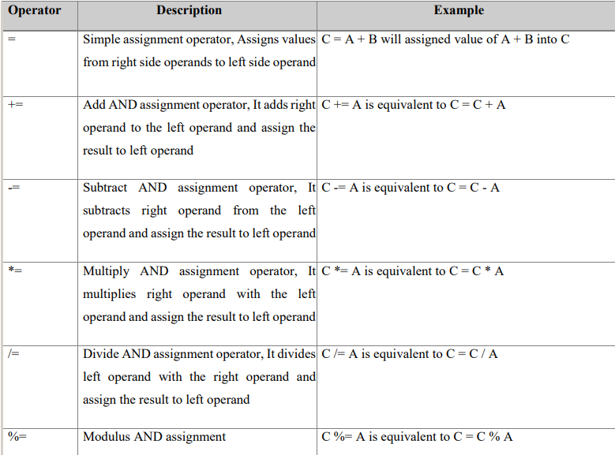
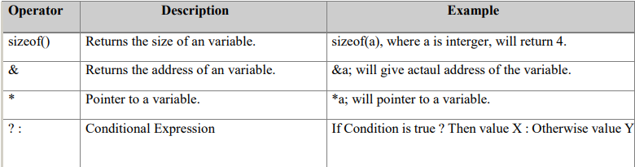
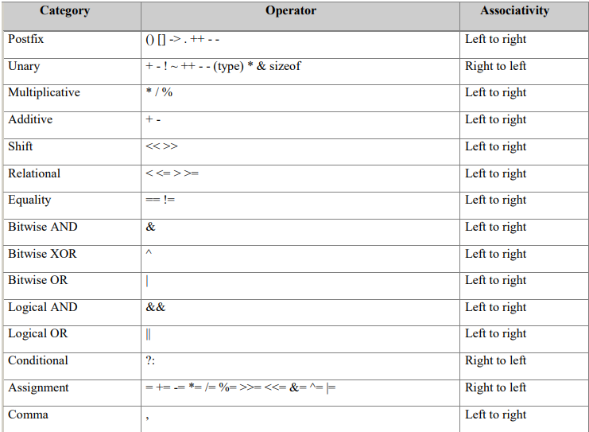

Operators in C
An Operator is a symbol that specifies the mathematical, logical or relational operator to be performed. C language supports following type of operators.
● Arithmetic operators
● Logical (or Relational) Operators
● Bitwise Operators
● Assignment Operators
● Misc Operators
Arithmetic Operators:

Logical (or Relational) Operators:
These are the following logical operators supported by C language. Assume variable A holds 10 and variable B holds 20 then:

Bitwise Operators:
Bitwise operator works on bits and performs bit by bit operation.
Assume if A = 60; and B = 13; Now in binary format they will be as follows:
A = 0011 1100
B = 0000 1101
A&B = 0000 1100
A|B = 0011 1101
A^B = 0011 0001
~A = 1100 0011
These are the following Bitwise operators supported by C language:

Assignment Operators:
These are the following assignment operators supported by C language:

Misc Operators:
These are few other operators supported by C Language:

Operational Categories:
All the operators we have discussed above can be categorised into following categories:
● Postfix operators, which follow a single operand.
● Unary prefix operators, which precede a single operand.
● Binary operators, which take two operands and perform a variety of arithmetic and logical operations.
● The conditional operator (a ternary operator), which takes three operands and evaluates either the second or third expression, depending on the evaluation of the first expression.
● Assignment operators, which assign a value to a variable.
● The comma operator, which guarantees left-to-right evaluation of comma-separated expressions.
Precedence of C Operators:
Operator precedence determines the grouping of terms in an expression. This affects how an expression is evaluated. Certain operators have higher precedence than others; for example, the multiplication operator has higher precedence than the addition operator:
For example x = 7 + 3 * 2; Here x is assigned 13, not 20 because operator * has higher precedenace than + so it first get multiplied with 3*2 and then adds into 7.
Here operators with the highest precedence appear at the top of the table, those with the lowest appear at the bottom. Within an expression, higher precedenace operators will be evaluated first.
